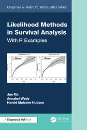

The Book
book.Rmd
Likelihood Methods in Survival Analysis
With R Examples
Jun Ma, Annabel Webb and Harold Malcolm Hudson
Chapman & Hall/CRC Biostatistics Series, 1st edition, 2024. Boca Raton: Chapman and Hall/CRC.
- DOI: 10.1201/9781351109710
- ISBN (ebook): 9781351109710
- Publisher page: taylorfrancis.com
survivalMPL is the reference implementation of the
maximum penalised likelihood (MPL) methods developed in this book. Where
the book explains why the baseline hazard can be estimated jointly with
the regression coefficients, and how the non-negativity constraints and
the smoothing parameter are handled, the package provides the fitting
machinery: coxph_mpl(), the basis functions for
,
and the inference built on top of them.
What the book covers
The book develops likelihood-based survival analysis from first principles and then works through the penalised likelihood approach that this package implements:
- likelihoods for right-, left- and interval-censored data, and for left truncation;
- the Cox model estimated by penalised full likelihood rather than partial likelihood, with the baseline hazard expanded in non-negative basis functions;
- constrained optimisation under , and automatic selection of the smoothing parameter;
- asymptotic results and variance estimators for the constrained estimates;
- stratified Cox models, checking the proportional hazards assumption, and extensions including time-varying covariates and competing risks;
- worked R examples throughout, several of which appear in these articles.
Where the articles follow the book
| Article | Book material |
|---|---|
| Interval Censoring | Chapter 2 examples on partly interval-censored data, including the pseudo-melanoma recurrence study |
| Right Censoring | The residual and proportional hazards diagnostics of Section 5.2.1 |
| Basis Functions for the Baseline Hazard | The definitions of the uniform, Gaussian, M-spline and Epanechnikov bases and their roughness penalties |
Comparing coxph() and
coxph_mpl() |
The comparison between partial and penalised full likelihood estimation |
Citing the book
@book{MaWebbHudson2024,
author = {Ma, Jun and Webb, Annabel and Hudson, Harold Malcolm},
title = {Likelihood Methods in Survival Analysis: With {R} Examples},
year = {2024},
publisher = {Chapman and Hall/{CRC}},
address = {Boca Raton},
edition = {1st},
isbn = {9781351109710},
doi = {10.1201/9781351109710}
}The underlying paper
The right-censored case, including the sandwich variance estimator
reported by summary() as M2HM2, is developed
in:
Ma, J., Heritier, S. and Lo, S. N. (2014). On the maximum penalised likelihood approach for proportional hazard models with right censored survival data. Computational Statistics & Data Analysis 74, 142-156. DOI: 10.1016/j.csda.2014.01.005